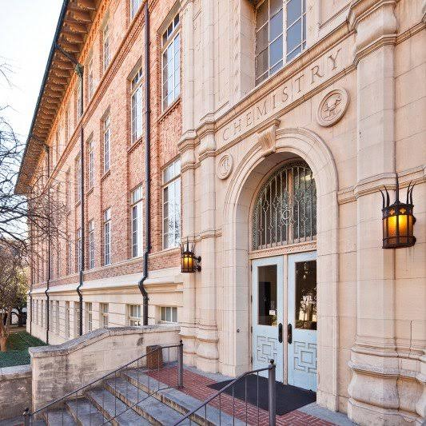

For PhD applicants
Graduate students
Apply through the UT Austin Department of Chemistry graduate program and name the lab in your statement of purpose. If you are already at UT and looking for a rotation, write directly.
What to send →About us
Recruiting is open now for the first cohort — graduate students, postdocs, and undergraduate researchers.


No single background is required. Chemists, spectroscopists, materials scientists, and people who enjoy working with data all have a place.
For PhD applicants
Apply through the UT Austin Department of Chemistry graduate program and name the lab in your statement of purpose. If you are already at UT and looking for a rotation, write directly.
What to send →For postdocs
Send a CV and a short paragraph describing what you would like to build. Support for fellowship applications is expected here, not optional — writing time is planned, not squeezed in.
What to send →For undergraduates
Open to UT Austin undergraduates in chemistry, biochemistry, engineering, and related fields, including first- and second-years. Everyone works toward an independent project.
What to send →Joining a new lab means shaping it — choosing instruments, writing the first protocols, and setting how it works. That is more responsibility than a large established one offers, and more credit.